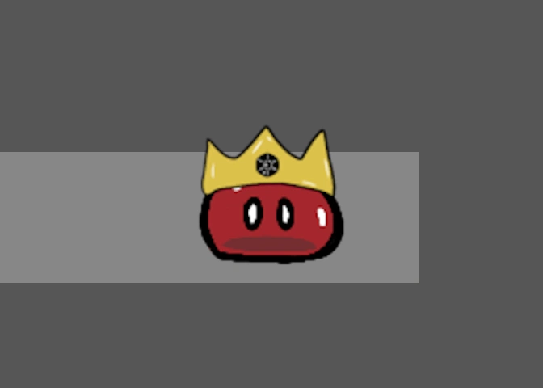

This project is not available for mobile use. Please try again on a larger display
Completion Date: 5/22/2024
Development Time: 8 Months
This project was developed and submitted for the Technology Student Association Video Game Design competition. The game
qualified for submission at the state level and placed 6th. This project was developed by Nate Montgomery, Wenddy He,
Lauren Patton, and Anna McCoy. Lauren Patton has not submitted commentary for this website.
Nate Montgomery
Looped is a project that is very dear to me as it was the first programming project I have tackled with a group of people.
I was the lead programmer in this project, and I developed the vast majority of functional code used. Working on this
project was a very uniquely rewarding experience. I rarely have experienced anything while coding that was as magical as
bringing my friends’ animations to life. I am very proud of this project, though there is much that could be improved.
Although the project started in early September, serious progress wasn't made until the last month of development. Plus,
in typical TSA fashion, we crammed in a ton of work on submission day. This was something that we all learned to avoid in
future projects. We were very ambitious to begin the project and had to scrap a lot of ideas such as extra rooms and
mechanics, such as shopkeepers. Also, the “Slimes Caught” counter was a last minute edition we added once we were informed
that the implication of killing slimes was not exactly TSA friendly. These mistakes are minimal when considering how much
we all learned from this experience. We were all stretched in various ways. I for one made my first collision library while
working on this project, and I would go on to use this library in a variety of other projects that are not yet displayed on
this website. This is also the first of my projects to use a simple frame by frame animation library I created a year prior.
Finally, I learned how to code as a team and how to properly communicate and document my progress so that other people can
quickly understand my contributions. I think I speak for us all when I say that we are very proud of how this project turned
out.
Wenddy He
I animated and drew most of the assets in the game including, but not limited to, the slime, the background scenery, and the
background objects. Since it was my first time animating, it was pretty challenging to learn everything from scratch. But,
overall, it was a good learning experience as I discovered my passion for incorporating art and technology.
Anna McCoy
I focused primarily on organization and story development. I directed the project and team members; created a portfolio dictating
our design process, goals, and challenges faced; and produced the soundtracks for most of the levels. Although our plans were a
bit overly ambitious, I really enjoyed working on this project. I learned a lot about teamwork and time management, and I'm
excited to continue improving it and see our dreams come to life!